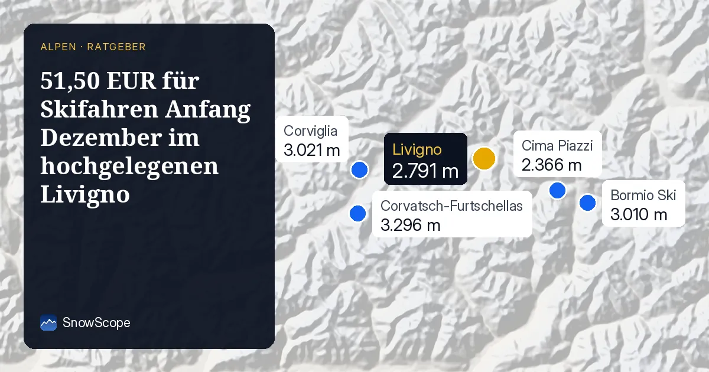

51,50 EUR für Skifahren Anfang Dezember im hochgelegenen Livigno
51,50 EUR ist der Tagespreis für einen Erwachsenen-Skipass in Livigno während des Aktionszeitraums Anfang Dezember. Dieser niedrige Preis gilt bis zum 18. Dezember 2026 und ist die beste Art, dieses hohe italienische Tal günstig zu befahren. Du kannst 83 km Pisten für deutlich weniger Geld genießen, wenn du vor der Ankunft der Weihnachtsmassen kommst.
Die Live-Schneeprognose für Livigno in der SnowScope-AppSchneehöhen, Pulverschnee-Alarme und 3D-Karte, gratis.
Günstige Preise vor dem Weihnachtstrubel
Skifahren in der frühen Saison ist eine kluge Art, Geld zu sparen, wenn du weißt, wohin du gehen musst. In Livigno bietet die offizielle Website einen 1-Tages-Skipass für Erwachsene für 51,50 EUR während des Aktionszeitraums vom 28. November bis zum 18. Dezember 2026 an. Das ist ein tolles Angebot für ein erschlossenes Skigebiet mit 37 Liften und einem Höhenunterschied von 979 m. Wenn du eine ganze Woche bleibst, kostet der 6-Tages-Skipass für Erwachsene im selben Zeitraum 258,50 EUR.
Das Dorf liegt auf 1.811 m, was für die Alpen ziemlich hoch ist. Diese Höhe hilft, die Luft kalt und den Schnee trocken zu halten, selbst früh im Winter. Da der niedrigste Lift auf 1.811 m startet, musst du dir nicht so viele Sorgen um Regen in niedrigen Lagen machen wie in anderen Gebieten. Für einen sparsamen Skifahrer bieten diese drei Wochen im Dezember das beste Gleichgewicht zwischen einem niedrigen Preis und dem Zugang zu einem großen Berggebiet.

Schneeerwartungen Anfang Dezember
Die Schneehöhe variiert je nachdem, in welchem Teil des Berges du fährst. Am Gipfel der Lifte auf 2.791 m zeigt unsere Schneehistorie, dass in der ersten Dezemberwoche in 93 % der vergangenen Winter 30 cm oder mehr Schnee liegen. Bis zur dritten Woche, vom 15. bis 21. Dezember, erreicht dieser Wert 100 % der vergangenen Winter. Das macht den Gipfel des Berges zu einer sehr sicheren Wette für Schwünge in der frühen Saison.
Die Mitte des Berges auf 2.301 m hat ebenfalls gute Chancen für die frühen Wochen. In der ersten Dezemberwoche liegen in 57 % der vergangenen Winter 30 cm oder mehr Schnee. Dies verbessert sich bis Mitte des Monats auf 85 % der vergangenen Winter. Am 13. November 2026 beträgt die aktuelle Schneehöhe 1 cm an der Basis und 2 cm am Gipfel. Die Zwei-Wochen-Prognose deutet darauf hin, dass 12 cm bis 26 cm Neuschnee auf die oberen Pisten zukommen.
Die Basis des Gebiets auf 1.811 m ist Anfang Dezember oft dünner. In einem üblichen Dezember beträgt die Basishöhe 28 cm. Während der ersten Woche des Monats liegen nur in 30 % der vergangenen Winter 30 cm oder mehr Schnee. Deshalb ist es besser, sich beim Skifahren auf die höheren Pisten zu konzentrieren, wo das erschlossene Skigebiet bis auf 2.791 m reicht. Der Schnee hält normalerweise ab Ende Oktober unten und ab Ende September oben.
Wie sich die Preise Ende Dezember ändern
Wenn du bis später im Monat wartest, steigen die Preise deutlich an. Vom 19. bis 25. Dezember 2026 erhöht sich der 1-Tages-Skipass für Erwachsene auf 66,00 EUR. Während sich die Schneechancen an der Basis in der letzten Woche des Monats auf 57 % für 30 cm oder mehr verbessern, sind die Mehrkosten für einen preisbewussten Reisenden es vielleicht nicht wert.
Die höchsten Preise beginnen am 26. Dezember 2026 für die Hochsaison. Ein 1-Tages-Skipass für Erwachsene kostet dann 74,50 EUR. Zum Vergleich: Die übliche Höhe am 15. Dezember liegt bei 81 cm am Gipfel und 45 cm in der Mitte des Berges. Obwohl der Schnee tiefer ist, zahlst du viel mehr für dieselben 83 km Pisten. Innerhalb des Aktionszeitraums zu bleiben, der am 18. Dezember endet, ist der beste Weg, deine Kosten niedrig zu halten.
Vergleich von Livigno mit Pontedilegno-Tonale
Es ist hilfreich, sich andere Optionen wie Pontedilegno-Tonale anzusehen. Dieses Gebiet hat eine viel niedrigere Basis auf 1.120 m, was bedeutet, dass der untere Teil des Berges oft viel dünner ist. In einem üblichen Dezember hat die Basis in Pontedilegno-Tonale am 15. Dezember nur 17 cm Schnee. Im Gegensatz dazu hat Livigno an diesem Datum 27 cm an seiner Basis. Livigno hat auch mehr Pisten, mit 83 km im Vergleich zu 56 km in Pontedilegno-Tonale.
Allerdings hat Pontedilegno-Tonale eine höhere Gipfelstation auf 2.993 m. Diese Höhe sorgt für eine übliche Dezember-Höhe von 101 cm am Gipfel, was mehr ist als die 85 cm übliche Höhe am Gipfel von Livigno. Wir haben die Preise für Pontedilegno-Tonale auf der offiziellen Website nicht überprüft, daher können wir die Kosten nicht vergleichen. Für einen Skifahrer, der auf den niedrigsten Preis achtet, ist das 51,50 EUR Angebot in Livigno eine solide und bestätigte Wahl.
Langfristige Schneetrends im Tal
Unsere Schneehistorie von 46 vergangenen Wintern zeigt, dass es im Dezember in Livigno tatsächlich schneereicher wird. In der Mitte des Berges lag der Dezember-Durchschnitt während der ersten 15 Winter zwischen 1980-81 und 1994-95 bei 39 cm. In den letzten 15 Wintern zwischen 2011-12 und 2025-26 stieg dieser Durchschnitt auf 52 cm. Das ist ein positives Zeichen für Leute, die gerne früh in der Saison Skifahren.
Der Gipfel der Lifte sah einen noch größeren Anstieg. Die durchschnittliche Dezember-Höhe stieg von 59 cm in den ersten 15 Wintern auf 92 cm in den letzten 15 Wintern. Auch wenn der letzte Winter mit einem Dezember-Durchschnitt von nur 12 cm an der Basis dünn war, ist der langfristige Trend stark. Der dünnste Dezember am Gipfel war 2024-25 mit 37 cm, was immer noch ausreicht, um die Felsen auf den hohen Pisten zu bedecken.
Tipps für Skifahrer
- Buche deinen Skipass auf der offiziellen Website vor dem 18. Dezember, um dir den Aktionspreis von 51,50 EUR zu sichern.
- Ziele auf die Woche vom 15. bis 21. Dezember für eine 100 % Chance, mindestens 30 cm Schnee am Gipfel des Berges zu finden.
- Konzentriere dich beim Skifahren auf die Pisten oberhalb der Mitte des Berges auf 2.301 m, wo der Schnee Anfang Dezember zuverlässiger ist.
- Überprüfe den Lawinenlagebericht, bevor du abseits der Pisten fährst, besonders wenn der Neuschnee den Prognosebereich von 26 cm erreicht.
Weitere Karten (externe Seiten)
Quellen und Nachweise
- Livigno, official ski pass price list 2026-27 (PDF) www.livigno.eu/hubfs/tariffe_26-27.pdf
- SnowScope, December snow at three heights and today's snow map snowscope.app/
Zu diesen Zahlen
Aktueller Schnee und Zwei-Wochen-Ausblick: SnowScope-Prognosen (Ausblick aus ECMWF und GFS, eine Spanne, kein Versprechen). Lifte und Pisten: OpenSkiMap-Kartierung. Preise: die offiziellen Seiten unten, gelesen am 2026-11-13; Preise können sich ändern, vor der Buchung prüfen.
Offizielle Lawinenlageberichte: AINEVA – Associazione Interregionale Neve e Valanghe
Diesen Bericht zitieren
Für Forschung, Lehre oder Presse: Zahlen und Grafiken sind unter CC BY 4.0 mit dieser Quellenangabe frei nutzbar.
SnowScope (2026), 51,50 EUR für Skifahren Anfang Dezember im hochgelegenen Livigno, https://snowscope.app/blog/de/2026/11/livigno-december-ski-promo-price-snow-odds-2026.html, abgerufen am 2026-11-14
SnowScope (Atlas Labs). (2026, November 14). 51,50 EUR für Skifahren Anfang Dezember im hochgelegenen Livigno. SnowScope snow reports. https://snowscope.app/blog/de/2026/11/livigno-december-ski-promo-price-snow-odds-2026.html
BibTeX
@misc{snowscope2026livignodecemberskipromop,
author = {{SnowScope (Atlas Labs)}},
title = {51,50 EUR für Skifahren Anfang Dezember im hochgelegenen Livigno},
year = {2026},
month = nov,
howpublished = {\url{https://snowscope.app/blog/de/2026/11/livigno-december-ski-promo-price-snow-odds-2026.html}},
note = {Published 2026-11-14 13:29 UTC; accessed 2026-11-14}
}· CC BY 4.0 · Methoden, Daten und Werkzeuge →
Livigno: Schnee und Temperatur nach Höhe, dieser Winter vs letzter (Werkzeuge) →
Livigno folgen
Gratis: eine Nachricht, wenn Neuschnee kommt, und jeden Morgen die Vorhersage.